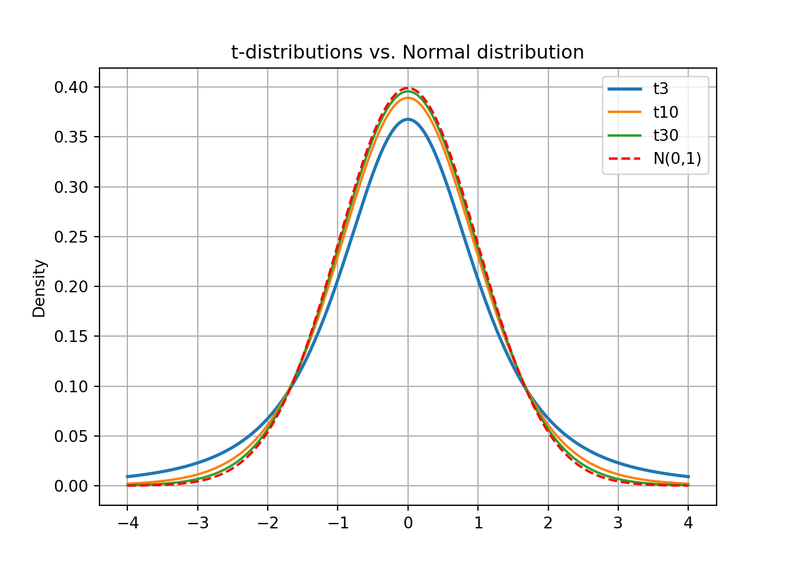
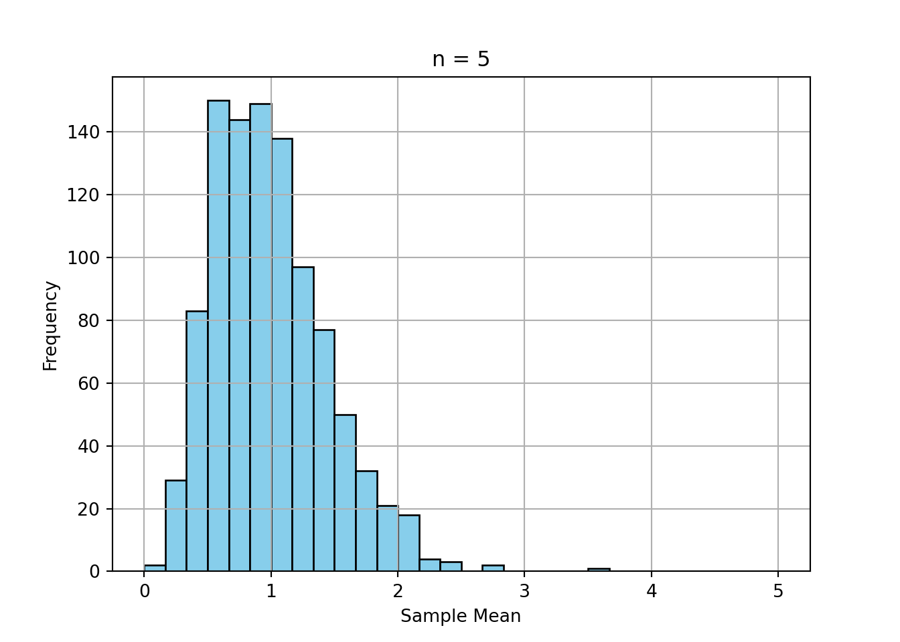
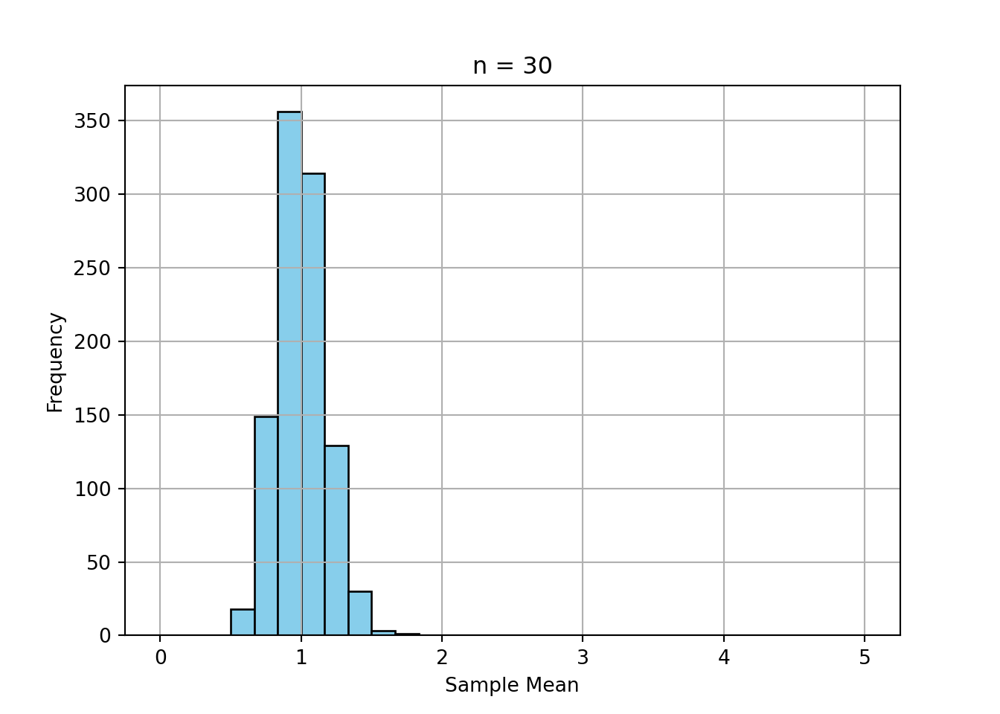
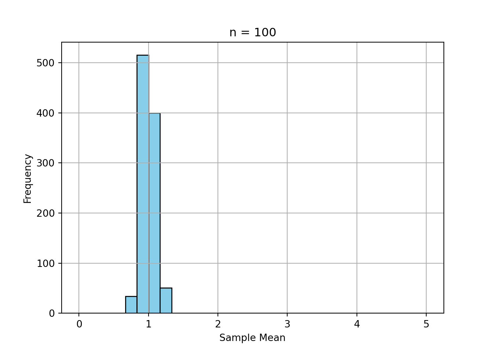
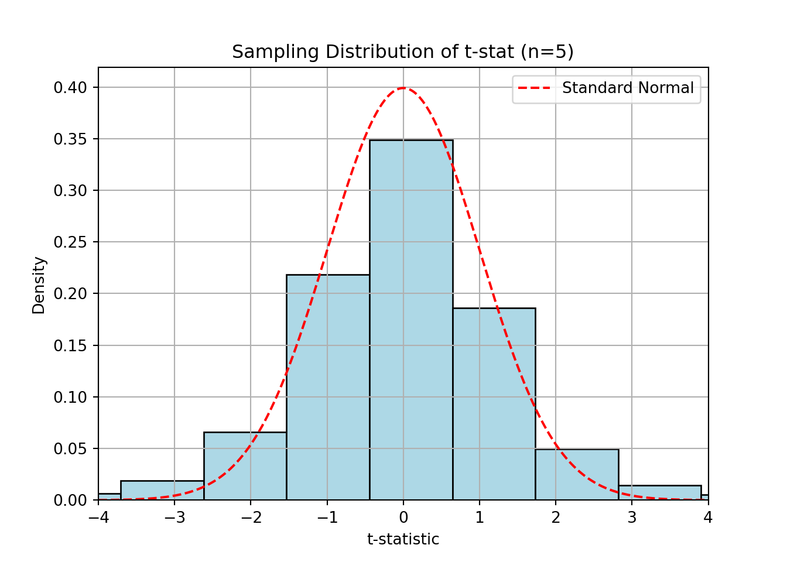
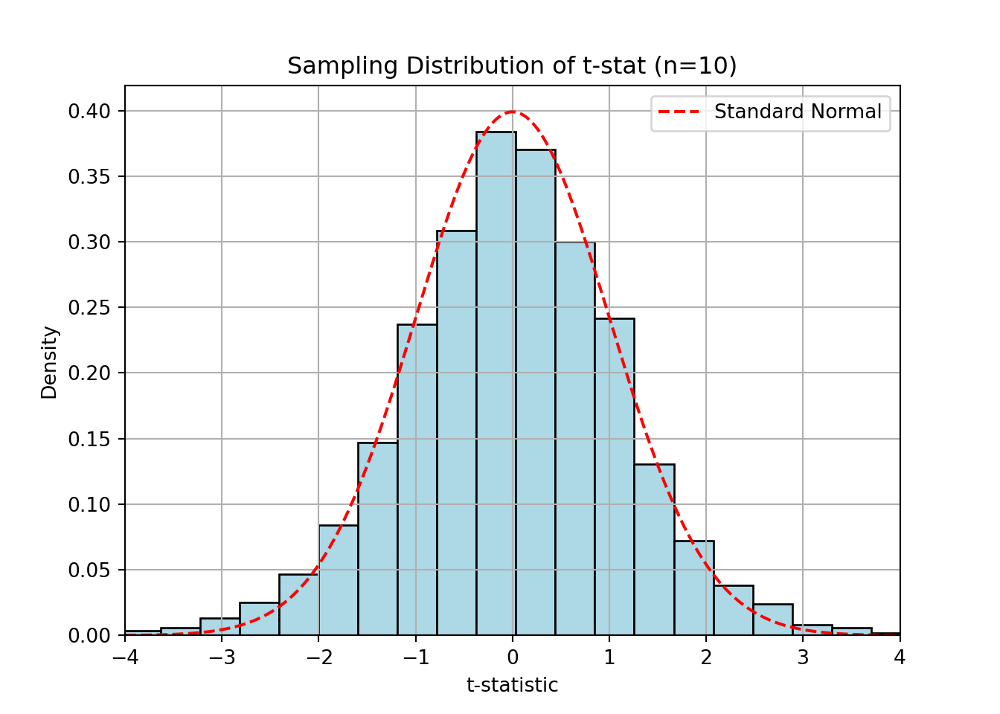
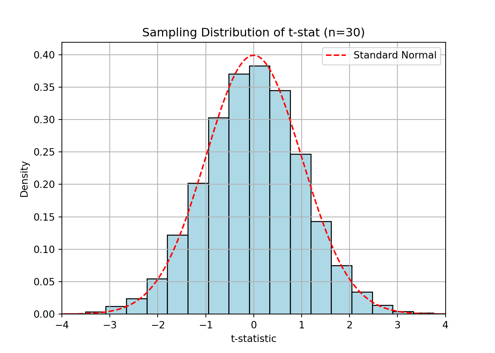

from scipy import stats
print(1-stats.t.cdf(3.29, 29))0.0013169979736814552For the following exercises, we will use the test statistic for one-sample t-test with null hypothesis \(H_0:\mu=\mu_0\): \[T=\frac{\bar x-\mu_0}{s/\sqrt{n}},\] where \(n\) is the sample size, \(\bar x\) is the sample mean, \(s\) is the sample standard deviation and \(\mu_0\) is the expected value under the null hypothesis.
A company selling premium coffee beans wants to determine whether reducing the price of its product leads to a significant increase in the average number of bags sold per day. The marketing team conducted a test by lowering the price for a month in select stores and measuring the sales volume. They want to analyze whether the mean daily sales after the price reduction are significantly higher than before.
Before the price reduction, the mean daily sales were 200 bags. After the price reduction, a sample of 30 days of sales data showed a sample mean of 215 bags, with standard deviation 25 bags.
Calculate the test statistic.
Find the p-value. What is the conclusion?
\(H_0: \mu\le 200\) vs \(H_1: \mu>200\). We could allow for a relatively high significance level in this context, because rejecting a true null hypothesis (Type I error) will most likely not have large consequences, e.g. \(\alpha =0.1\).
\(T=(215-200)/(25/\sqrt{30})=3.29\)
\(\text{p-value}=P(T_{29}>3.29)=0.00132\). The p-value is very low, indicating that we may reject the null hypothesis at (almost) any significance level in (a). The company should continue with the reduced price.
A large company is trying to encourage employees to save more for retirement. Previously, employees had to actively sign up for the company’s pension savings plan (opt-in system). Recently, the company changed its policy so that employees are automatically enrolled in the plan but can opt out if they wish (opt-out system). Behavioral economists suggest that default options strongly influence decision-making, leading to higher participation rates in savings plans.
The HR department wants to test with a significance level of 5% whether the average monthly contribution to the retirement plan has increased significantly after implementing the opt-out system.
Before the change, the average monthly contribution was $250 per employee. After the policy change, a random sample of 50 employees showed: Sample mean of $270 and standard deviation of $90.
Calculate the test statistic.
Find the p-value. What is the conclusion?
\(H_0: \mu\le 250\) vs \(H_1: \mu>250\).
\(T=(270-250)/(90/\sqrt{50})=1.57\)
\(\text{p-value}=P(T_{29}>3.29)=0.0613\). The p-value is higher than 5%, indicating that we may reject not the null hypothesis. The pension payments have not increased due to the change from opting in to opting out.
A nutritionist wants to test whether a new diet plan leads to a significant reduction in average daily calorie intake. A sample of 40 individuals followed the diet for one month, and their average daily calorie intake was recorded.
The recommended daily intake before the diet was 2200 kcal. After one month, the sample had a mean intake of 2100 kcal with a standard deviation of 250 kcal.
Set up the null- and alternative hypotheses.
Calculate the test statistic.
Find the p-value and interpret the result.
\(H_0: \mu\geq 2200\) vs \(H_1: \mu<2200\).
\[T=\frac{2100-2200}{250/\sqrt{40}}=-2.53\]
\[\text{p-value}=P(T_{39}<-2.53)=0.0079\]
Since the p-value is lower than the conventional 5% significance level, we reject the null hypothesis, suggesting that the new diet plan significantly reduces daily calorie intake.
A smartphone manufacturer wants to determine whether the battery life of their new model is significantly different from the advertised 24 hours. A sample of 50 devices was tested, showing a mean battery life of 23.5 hours with a standard deviation of 1.2 hours.
Formulate the hypotheses.
Compute the test statistic.
Determine the p-value and state your conclusion.
\(H_0: \mu=24\) vs \(H_1: \mu\neq 24\).
\[T=\frac{23.5-24}{1.2/\sqrt{50}}=-2.946\]
\[\text{p-value}=2 \times P(T_{49}<-2.94)=0.0049\]
Since the p-value is very small, we reject the null hypothesis, indicating that the battery life is significantly different from 24 hours.
A fitness instructor claims that the average resting pulse rate of adults in their program is less than 70 beats per minute. A sample of 10 participants yields:
\[ \text{Pulse Rates:} \ 68, \ 72, \ 69, \ 71, \ 67, \ 65, \ 70,\ 66,\ 68, \ 64 \]
Assume approximate normality.
State the null and alternative hypotheses.
Compute the sample mean and standard deviation.
Conduct a one-sample t-test at the 5% significance level.
What do you conclude?
If the sample had been twice as large with the same mean and standard deviation, how would the p-value likely change?
\(H_0: \mu = 70\) \(H_1: \mu < 70\)
\(\bar{x} = \frac{1}{10}\sum^{10}_{i=1}x_i=68.0\), \(s=\sqrt{\frac{1}{n-1}\sum^{10}_{i=1}\left(x_i-\bar{x}\right)^2} \approx 2.58\)
\(t = \frac{68 - 70}{2.58/\sqrt{10}} \approx -2.45\)
Critical value (df = n-1=9) at \(\alpha = 0.05\) is approximately -1.833. This number can easily be found in a t-table, or by running some code to estimate it.
### qt gives the quantile function for the
# t distribution. We use 0.05 to find the
# critical value as this is a one sided test.
# 9 is just the degrees of freedom
from scipy import stats
print(stats.t.ppf(-0.05, 9))nan### Underneath I am finding the p-value by
# looking at the distribution function of
# the t-distribution and plugging in the
# found t statistic.
print(stats.t.cdf(-2.45, 9))0.0183783590582972Since -2.58 < -1.833, we reject \(H_0\), and thus conclude that the average bpm is less than 70.
Suppose a manufacturer claims their machine fills soda bottles with 500 ml of soda. You suspect it underfills. You collect a sample of 12 bottles and measure:
This problem and it’s solutions were made in R, but feel free to use an equivalent.
Test if the true mean is less than 500 ml using R.
Provide the p-value and interpret the result.
What assumption are you making about the distribution?
### The t.test command let's you run a t.test by
# simply adding the H_0 mean and specifying the
# variant you'd liek to run. Here we test for
# H_1: mu<500 and H_0: mu=500
t_result = stats.ttest_1samp(x, popmean=500, alternative='less')
print(t_result)TtestResult(statistic=np.float64(-8.482095610516701), pvalue=np.float64(1.864450821881949e-06), df=np.int64(11))Output might give \(t \approx -8.49\), \(p < 0.001\). Strong evidence the machine underfills.
We assume that the population distribution is approximately normal, as required for small-sample t-tests.
For the following exercises, we will use the test statistic for two-sample t-test with null hypothesis \(H_0:\mu_1=\mu_2+d_0\): \[T=\frac{\bar x_1-\bar x_2-d_0}{\sqrt{s_1^2/n_1+s_2^2/n_2}},\] where \(n_1\) and \(n_2\) are the sample sizes of the two samples, \(\bar x_1\) and \(\bar x_2\) are the sample means, \(s_1\) and \(s_2\) are the sample standard deviations and \(d_0\) is the difference in expected value under the null hypothesis (often \(d_0=0\)). The test statistic follows a t-distribution with degrees of freedom (df): \[\text{df}=\frac{\big(\frac{s_1^2}{n_1}+\frac{s_2^2}{n_2}\big)^2}{\frac{(s_1^2/n_1)^2}{n_1-1}+\frac{(s_1^2/n_2)^2}{n_2-1}}\]
An e-commerce company wants to test whether showing customer reviews on product pages increases the average number of purchases. Behavioral economics suggests that social proof (i.e., seeing others’ positive experiences) influences decision-making and can lead to higher sales.
To test this, the company randomly selected two groups of products: one group displayed customer reviews, and the other did not. They then compared the average daily sales per product between the two groups.
Set up the null- and alternative hypothesis. Use 10% significance level.
Discuss how the test statistic will behave under the various hypothesis.
The experiment result in the following data:
Calculate the test statistic and the degrees of freedom.
Find the p-value. What is the conclusion?
Let \(\mu_1\) be the expected daily sales with reviews and \(\mu_2\) without reviewes.
\(H_0: \mu_1\le \mu_2\) vs \(H_A: \mu_1>\mu_2\).
Under the null hypothesis, we expect the numerator of the test statistic to be close to zero, making the test statistic close to zero. Under the alternative hypothesis, we expect \(\bar x_1>\bar x_2\) such that the numerator of \(T\) will be positive. Higher values will therefore favor the alternative hypothesis.
import numpy as np
s1 = 30; s2 = 28; n1 = 40; n2 = 40
m1 = 120; m2 = 105;
df = (s1**2/n1 + s2**2/n2)**2/((s1**2/n1)**2/(n1-1)+(s2**2/n2)**2/(n2-1))
t = (m1-m2)/np.sqrt(s1*s1/n1+s2*s2/n2)
print("df=",df)df= 77.63164160330635T= 2.311799743112827\(T=(102-105)/\sqrt{30^2/40+28^2/40}=-0.462\) \[\text{df}=\frac{\big(\frac{s_1^2}{n_1}+\frac{s_2^2}{n_2}\big)^2}{\frac{(s_1^2/n_1)^2}{n_1-1}+\frac{(s_1^2/n_2)^2}{n_2-1}}\]
A company is testing whether offering a performance-based bonus increases employee productivity. They implement a new bonus system in one office location (Group A), while another office continues without bonuses (Group B). After three months, they measure the average number of completed sales calls per week in both offices. The company wants you to determine if the bonus system leads to higher productivity (mean number of sales calls).
Group A (Bonus group):
Group B (No bonus group):
Calculate the test statistic based on this information. Find the p-value.
What is your conclusion and your recommendation to the company?
\(H_0: \mu_A =\mu_B\) vs \(H_A: \mu_A>\mu_B\). In this case, the bonus scheme might be expensive, so we want to avoid type I errors (rejecting the null, when it is truly no difference in productivity). We use \(\alpha = 1\%\).
\(T=1.96\) and p-value \(=0.0267\).
The p-value is low, indicating evidence for the alternative hypothesis, but we have set a significance level of 1%, for which the p-value exceeds. This would lead us to not recommend implementing the bonus, because it does not improve productivity to a high enough degree at this significance level.
A university wants to determine if students who attend tutoring sessions perform better on exams than those who do not. Two independent samples of students were taken:
State the hypotheses.
Calculate the test statistic and degrees of freedom.
Find the p-value and interpret the result.
\(H_0: \mu_1 = \mu_2\) vs \(H_A: \mu_1 > \mu_2\).
s1 = 10; s2 = 12; n1 = 30; n2 = 35
m1 = 78; m2 = 72;
df = (s1**2/n1 + s2**2/n2)**2 / ((s1**2/n1)**2/(n1-1) + (s2**2/n2)**2/(n2-1))
t = (m1-m2) / ((s1**2/n1 + s2**2/n2)**0.5)
print("df=", df)df= 62.958820084919275T= 2.1985812677253573A professor wants to compare exam scores between online and in-person students, as he suspects his students preform systematically better with online exams. The results:
Set up the hypotheses.
Conduct a two-sample t-test.
At the 0.05 significance level, what do you conclude?
\(H_0: \mu_{\text{online}} = \mu_{\text{in-person}}\) \(H_1: \mu_{\text{online}} > \mu_{\text{in-person}}\)
Compute sample means and the sample variances. For sample 1, being the online results.
### We use the same methods as always to find the sample mean and variance, but here is a simple way to do it in R. I made this problem have very small datasets so it would be feasible to do by hand, so please make sure you find teh same results.
x_1 = np.array([82, 85, 88, 79, 84])
mean_x1 = np.mean(x_1)
var_x1 = np.var(x_1,ddof=1)
print("Mean:", mean_x1)Mean: 83.6Variance: 11.299999999999999I.e., we end up with \(\bar{x}_1=83.6\) and \(s^2_1=11.3\)
Now for sample 2, in person.
### Same as above, just new names
x_2 = np.array([78, 74, 80, 76, 77])
mean_x2 = np.mean(x_2)
var_x2 = np.var(x_2,ddof=1)
print("Mean:", mean_x2)Mean: 77.0Variance: 5.0I.e., we end up with \(\bar{x}_1=77\) and \(s^2_1=5\)
Test statistic:
\[ t = \frac{83.6 - 77.0}{\sqrt{\left(11.3/5+5/5\right)}} \approx 3.6554 \]
\[ \text{df}=\frac{\left(11.3/5+5/5\right)^2}{\frac{(11.3/5)^2}{4}+\frac{(5/5)^2}{4}}=6.9602\approx7 \] Using a table we can find our critical value when we let the df be 7 is 1.895.
With this we reject \(H_0\), significant difference.
Being more exact we can use some simple Python code.
### Since we are using a "greater than" test we need to use the 0.95 quantile to find the proper critical value, but since the t-distribution is symmetric, 0.95 and 0.05 will only be separated by a minus sign.
print(stats.t.ppf(0.95, df = 6.9602))1.8962097832217037### The probability function finds the finds the probability of being under a value, we here take the complement to find the probability of being over 3.6554
print(1-stats.t.cdf(3.6554, 6.9602))0.004100373037377536Underneath is an example of python code to do the exact same test.
x_1 = np.array([82, 85, 88, 79, 84])
x_2 = np.array([78, 74, 80, 76, 77])
# One-sided t-test: H1 is that mean of x_1 > mean of x_2
result = stats.ttest_ind(x_1, x_2, equal_var=False, alternative='greater')
print("t-statistic:", result.statistic)t-statistic: 3.6554019191032916p-value: 0.004100315140564395Suppose a two-sample t-test yields a p-value of 0.045 for comparing the means of two groups, using a significance level of 0.05.
Can we say the means are “significantly different”?
What if the significance level had been 0.01 instead?
Explain how this relates to Type I error.
Yes — at \(\alpha = 0.05\), we reject \(H_0\).
No — we would not reject at \(\alpha = 0.01\).
Significance thresholds control the probability of a Type I error (rejecting a true \(H_0\)). A lower threshold is more conservative.
Two teachers use different methods to teach the same material, and they want to test if their methods give different average results. Students are randomly assigned to either class.
State the hypotheses.
Calculate the Welch t-statistic.
Estimate the degrees of freedom.
Test at the 5% level: is there a significant difference in mean scores?
We have no indication of directionality for this test. Thus we end up with the following null and alternative hypotheses.
\(H_0: \mu_A = \mu_B\) \(H_1: \mu_A \ne \mu_B\)
We can plug i the means, square the standard deviatons and plug in the numbers in each sample for the test statistic. \[ t = \frac{78 - 73}{\sqrt{6^2/10 + 10^2/14}} = \frac{5}{\sqrt{3.6 + 7.14}} = \frac{5}{\sqrt{10.74}} \approx 1.53 \]
\[ df \approx \frac{(10.74)^2}{(3.6^2/9 + 7.14^2/13)} \approx 21.51 \]
Using Python code we can also find the exact and approximate df.
np.float64(-2.073873067904015)np.float64(2.0738730679040147)np.float64(-2.076615611268758)np.float64(2.076615611268758)You are given two samples:
Conduct a two-sample t-test assuming unequal variances.
Report the t-statistic, degrees of freedom, and p-value.
Interpret the result at \(\alpha=0.05\).
Does the output indicate anything about equality of variances?
TtestResult(statistic=np.float64(5.666666666666667), pvalue=np.float64(0.00033388838046637467), df=np.float64(8.797264682220435))\[ t=5.6667 \quad df=8.793 \quad \text{p-value}=0.0003339 \]
Strong evidence against \(H_0\) in form of such a low p-value, this indicates that the two samples are different at a 5 percent significance level.
Welch’s t-test does not require equal variances and is safer when variances are not assumed equal.
Let \(p\) denote a proportion and \(p_0\) be the proportion under the null hypothesis. We can then test the null hypothesis \(H_0: p=p_0\) against an alternative hypothesis using the test statistic \[Z = \frac{\hat p-p_0}{\sqrt{p_0(1-p_0)/n}},\] which is approximately normally distributed when \(n\) is sufficiently large and the probabilies are not too small (often \(np>5\) is used as a rule of thumb).
A retail chain is considering phasing out cash payments in favor of digital transactions. Management wants to determine whether at least 60% of customers are already using mobile payment apps (such as Apple Pay or Google Pay) when shopping. If the proportion is significantly higher than 60%, they may move forward with reducing cash payment options.
The retail chain conducts a survey where they ask customers whether they used a mobile payment app for their most recent purchase. Out of the 400 customers asked, 260 used mobile payment apps.
Calculate \(Z\) based on this information. What is the p-value?
What does the p-value tell you about people’s payment preferences?
\(H_0: p=0.6\) vs \(H_A: \mu>0.6\). The numerator of \(Z\) will be expected close to 0 if the null is zero, making Z close to zero. If \(H_A\) is true, \(\widehat p\) will be expected larger than 0.6, making Z positive. Large values of \(Z\) will favor \(H_A\).
\(Z = (0.65-0.6)/\sqrt{0.6\cdot 0.4/400}=2.04\) and p-value\(=P(Z>2.04)=0.0206\).
Z= 2.041241452319317Pvalue: 0.02061341666858174A sustainable fashion brand wants to know whether at least 30% of consumers are willing to pay a premium for eco-friendly clothing. If the proportion is significantly higher than 30% with significance level 10%, they will launch a new premium-priced, eco-friendly clothing line.
They conduct a market survey where respondents indicate whether they would be willing to pay 10% more for sustainably produced clothing.
The market survey got 500 respondents, and out of those, 166 were willing to pay 10% more for sustainable clothing.
Calculate \(Z\) based on this information. What is the p-value?
What would your recommendation to the fashion brand be?
\(H_0: p\le 30\%\) vs \(H_A: p>30\%\).
\(\hat p=166/500= 33.2\%\), \(z=(0.332-0.3)/\sqrt{0.3*0.7/500}=1.56\) and \(P(Z>z)=P(Z>1.56)=1-\Phi(1.56)=0.0592\).
At a 10% signifance level, we would reject the null hypothesis, since the p-value of 0.06 is smaller than 0.1. At this significance level, we would recommend the brand to go ahead with the launch of their eco-friendly clothing.
A public transportation agency wants to determine whether at least 70% of residents support a new subway line expansion. A survey of 600 residents finds that 435 support the expansion.
Formulate the hypotheses.
Compute the test statistic and p-value.
What is the conclusion?
\(H_0: p = 0.7\) vs \(H_A: p > 0.7\).
\[Z=\frac{0.725-0.7}{\sqrt{0.7\cdot 0.3/600}}=1.63\]
p-value \(=P(Z>1.63)=0.0907\)
Z= 1.336306209562123p-value= 0.09072460386070991A factory claims that at most 5% of products are defective. In a random sample of 80 products, 7 were defective.
Test whether the true defect rate is higher than claimed at the 5% level.
Compute the test statistic.
Conclude and interpret.
Should we consider this test trustworthy
\(H_1: p > 0.05\)
\[ \hat{p} = \frac{7}{80} = 0.0875,\quad z = \frac{0.0875 - 0.05}{\sqrt{0.05(0.95)/80}} \approx 1.54 \]
Since our alternative hypothesis is that that \(p>0.05\) we would need z to be higher than some critical value at the 5% level. Since we are using a one-sided test here, we find in a table that the critical value is given by \(z\approx 1.645\). We can clearly tell that our test-statistic is not hihgh enough and this we won’t discard \(H_0\) in this case. Underneath I have done some computation giving a more exact critical value and finding the p-value is about 6 percent.
The common rule of thumb is \(np>5\), and since \(n\hat{p}=7\) in this case, we find little reason for doubt in this case.
Let \(p_1\) and \(p_2\) denote two proportions. We can then test the null hypothesis \(H_0: p_1=p_2\) against an alternative hypothesis using the test statistic \[Z = \frac{\hat p_1-\hat p_2}{\sqrt{p_\text{pool}(1-p_\text{pool})(1/n_1+1/n_2)}},\] where \[p_\text{pool}=\frac{n_1\widehat p_1+n_2\widehat p_2}{n_1+n_2}.\] The test statistic Z is approximately normally distributed.
An insurance company is testing how the way they frame their sales pitch affects customers’ willingness to buy a travel insurance policy. They randomly assign potential customers into two groups:
Behavioral economics suggests that loss aversion makes people more sensitive to potential losses than gains, meaning the loss-framed message might lead to higher purchase rates.
Set up the null- and alternative hypothesis.
Discuss how the test statistic will behave under the various hypothesis.
The experiment result in the following data:
Calculate the test statistic and the p-value.
Conclude the test.
Let \(p_L\) denote proportion of purchases receiving a loss-framed message and \(p_G\) denote proportion of purchases receiving a gain-framed message. a) \(H_0: p_L=p_G\) vs \(H_A: p_L>p_G\).
We use \(p_1=p_L\) and \(p_2 =p_G\) in refence to the formula for the test statistic. If the null hypothesis is true, Z is expected to be close to zero since the numerator is expected to be near 0. If the alternative hypothesis is true, we expect \(\hat p_L>\hat p_G\), giving a positive numerator. Thus, large values of Z will favor the alternative hypothesis.
pL = 0.45
pG = 0.35
nL = 200
nG = 200
pPool = (nL*pL + nG*pG)/(nL+nG)
z = (pL-pG)/np.sqrt(pPool*(1-pPool)*(1/nL+1/nG))
print("Z=",z)Z= 2.041241452319316pvalue= 0.02061341666858174An online retailer wants to determine whether offering free shipping increases the proportion of customers who complete their purchases. They run an A/B test, where one group of customers sees free shipping on all orders (Group A), while another group sees the standard shipping fees (Group B). After a week, they compare the proportion of customers who completed a purchase in each group. The retailer asks you to use 5% significance level.
For the two groups, the retailer gathered the following data:
Group A (Standard shipping):
Group B (Free shipping)
Perform the test: Find Z and the p-value.
What is your conclusion?
The chief economist in the company has taken a statistics course and learned about the difference between statistical significance and economical significance. How would this distinction influence your recommendation to the company?
\(H_0: p_A=p_B\) vs \(H_A: p_A<p_B\).
0.07101140261425792Z= -2.2050192819722274pvalue= 0.01372637075205902At a 5% significance level, the free shipping group have a higher completing rate than the standard shipping group.
Here the effect size \(|\widehat p_A-\widehat p_B| = 7\%\), that is 7 percentage points higher rate of completing the order if the shipping is free. This increase in completed orders increases the volume, but the free shipping will reduce the margin on each order. We would need more information to assess whether this specific experiment that resulted in a statistically significant increase in volume, also resulted in a economically significant increase of profits.
A company is testing whether a new website layout increases the proportion of users who complete a purchase. They conduct an A/B test with the following results:
Formulate the hypotheses.
Compute the test statistic and p-value.
Interpret the result.
\(H_0: p_1 = p_2\) vs \(H_A: p_1 > p_2\).
from scipy import stats
n1, n2 = 500, 500
p1, p2 = 210/n1, 180/n2
p_pool = (210 + 180) / (n1 + n2)
z = (p1 - p2) / ((p_pool * (1 - p_pool) * (1/n1 + 1/n2)) ** 0.5)
print("Z=", z)Z= 1.9450198311991271p-value= 0.025886295779031898In a clinical trial, 35 of 50 patients in group A responded to a vaccine. In group B, 40 of 60 patients responded.
State the hypotheses
Compute the test statistic
Conclude on the test
Interpret the result.
\(H_0: p_A = p_B\), \(H_a: p_A \ne p_B\)
\[ \hat{p}_1 =\frac{35}{50}= 0.70,\quad \hat{p}_2=\frac{40}{60} = 0.6667,\quad \hat{p}_{\text{pooled}} = \frac{35+40}{110} = 0.6818 \]
\[ z = \frac{0.70 - 0.6667}{\sqrt{0.6818(1 - 0.6818)(1/50 + 1/60)}} \approx 0.373 \]
Let’s find the p-value with Python to show this clearly.
-1.95996398454005451.9599639845400540.7091484439599731\(p \approx 0.70\), not significant.
What are the two parameters that define a normal distribution?
What does the empirical rule (68-95-99.7 rule) state about the normal distribution?
A normal distribution is fully defined by its mean (μ) and standard deviation (σ).
The normal distribution is a symmetric distribution around its mean, \(\mu\). The rule gives an approximate measure of what proportion of the data that lies within a certain range of the mean.
This helps assess spread and typicality.
Given that \(X \sim \mathcal{N}(100, 15^2)\) (i.e. \(X\) is normally distributed with mean \(\mu=100\) and standard deviation \(\sigma=15\)), calculate:
The probability of \(X < 100\). Why do we not need to consider the standard deviation when calculating this?
The approximate probability that \(X < 115\)
Use a z-transformation to b) to standard normal, and compute using a calculator. Let \(Z\sim \mathcal{N}(0,1)\), we call that a standard normal distribution. We also have that
\[ Z=\frac{X-\mu}{\sigma} \]
\[ P(X>100)=\frac{1}{2}=0.5 \]
\[ P(X\in(100,115))=\frac{0.68}{2}\approx0.34 \] Now let’s also account for the cases where \(X\leq 100\)
\[ P(X<115)=P(X\leq100)+P(X\in(100,115))\approx0.5+0.34=0.84 \] Note: Since the normal distribution is continuous \(P(X<x)=P(X\leq x)\)
Interpretation: There’s about an 84.13% chance that \(X\) will be below 115, which is equivalent to \(Z\) being below 1.
Suppose a random variable \(X \sim \mathcal{N}(\mu, \sigma^2)\). Show that:
\[ P(a < X < b) = P\left( \frac{a - \mu}{\sigma} < Z < \frac{b - \mu}{\sigma} \right) \]
This transformation uses the standardization:
\[ Z = \frac{X - \mu}{\sigma} \]
By applying this, we shift any normal distribution to the standard normal. We need only substitute and solve like a regular inequality, and the equivalence becomes clear.
\[ P(a < X < b) = P\left( \frac{a - \mu}{\sigma} < Z < \frac{b - \mu}{\sigma} \right) \]
\[ P(Z > 1.96) = P(Z < -1.96) \]
\[ P(Z > c) = P(Z < -c) \] This equality comes from the logical fact of us a random varabiable being just as unlikely to take a value beyond a certain distance from the mean, no matter if the distance is in a positive of a negative directoion.
\[ P(|Z| > 1.96) =P(Z<-1.96))+P(Z>1.96)=2P(Z<-1.96)\approx 2*0.025=0.05 \]
Sketch or describe how the t-distribution changes as degrees of freedom increase.
What does the t-distribution converge to?
With low degrees of freedom, the t-distribution is flatter and has fatter tails. As df increases, it becomes more peaked. The t-distribution also always has a mean of 0, and is symmetric around 0.
As df → ∞, the t-distribution approaches the standard normal distribution.
We can illustrate this quite simply without going into the ideas fully.
Let first \(X_1,\dots,X_n\sim i.i.d. \mathcal{N}(\mu, \sigma^2)\), and then let
\[ \bar{X}=\frac{1}{n}\sum^n_{i=1}X_i, \quad S^2=\frac{1}{n-1}\sum^n_{i=1}(X_i-\bar{X})^2 \] It can then be shown that \[ \frac{\bar{X}-\mu}{\sigma/\sqrt{n}}\sim\mathcal{N}(0,1), \quad \frac{\bar{X}-\mu}{S/\sqrt{n}}\sim t\_{n-1} \] where \(t_{n-1}\) indicates a t-distribution with \(df=n-1\). Clearly these are very similar statements. All we need to recall now is that \(S^2\) is and unbiased and consistent estimator of \(\sigma^2\). I.e.
\[ \lim_{n\rightarrow\infty}S^2=\sigma^2 \quad \Rightarrow \quad \frac{\bar{X}-\mu}{S/\sqrt{n}}\sim t_{n-1} \rightarrow \frac{\bar{X}-\mu}{\sigma/\sqrt{n}}\sim\mathcal{N}(0,1). \]
A population has a skewed distribution with mean 10 and SD 5. Suppose we take samples of size 50. You can assume the samples are iid.
What is the expected distribution of the sample mean?
Use CLT to approximate \(P(\bar{X} > 11)\)
CLT tells us that \(\bar{X} \sim \mathcal{N}\left(10, \frac{5}{\sqrt{50}}\right)\)
\[ Z = \frac{11 - 10}{5/\sqrt{50}} \approx \frac{1}{0.707} \approx 1.41 \Rightarrow P(Z > 1.41) \approx 0.079 \]
Explain when you should use the standard normal vs. the t-distribution in practice.
Use the t-distribution if:
Use standard normal if:
Because of the extra uncertainty in estimating the population SD from the sample.
Wider tails mean larger critical values, so you’re less likely to reject \(H_0\) with small samples.
Use Python (or something similar) to plot the density curves of \(t_3, t_{10}, t_{30}\), and standard normal.
What do you observe as df increases?
Which distribution has the heaviest tails?
import numpy as np
import matplotlib.pyplot as plt
from scipy.stats import t, norm
# x-values for plotting
x = np.linspace(-4, 4, 500)
# Plot t-distributions
plt.plot(x, t.pdf(x, df=3), label="t3", linewidth=2);
plt.plot(x, t.pdf(x, df=10), label="t10");
plt.plot(x, t.pdf(x, df=30), label="t30");
# Plot standard normal
plt.plot(x, norm.pdf(x), 'r--', label="N(0,1)");
# Legend and labels
plt.legend(loc="upper right");
plt.ylabel("Density");
plt.title("t-distributions vs. Normal distribution");
plt.grid(True);
plt.show()
Let \(Z\sim\mathcal{N}(0,1)\) Use Python to compute:
\(P(Z > 1.96)\)
\(P(-1.64 < Z < 1.64)\)
\(P(X > 120)\), if \(X \sim \mathcal{N}(100, 15^2)\)
Simulate the sample mean of 1000 samples of size 5, 30, and 100 from an exponential distribution.
Plot the histograms.
Comment on convergence to normality.
np.random.seed(42)
# Function to generate 1000 sample means of size n
def sample_means(n):
return [np.mean(np.random.exponential(scale=1, size=n)) for _ in range(1000)]
# Sample sizes
sample_sizes = [5, 30, 100]
# Plot histograms
for i, n in enumerate(sample_sizes, 1):
plt.figure();
plt.hist(sample_means(n), bins=30, range=(0, 5), color='skyblue', edgecolor='black');
plt.title(f'n = {n}');
plt.xlabel('Sample Mean');
plt.ylabel('Frequency');
plt.grid(True);
plt.show();


Generate t-statistics using normal data and see how the distribution changes.
Generate 10,000 t-statistics from n = 5, 10, 30
Plot and compare to standard normal
import numpy as np
import matplotlib.pyplot as plt
from scipy.stats import norm
# Function to generate 10,000 t-statistics from samples of size n
def gen_t(n):
t_stats = []
for _ in range(10000):
x = np.random.normal(loc=0, scale=1, size=n)
t_stat = np.mean(x) / (np.std(x, ddof=1) / np.sqrt(n))
t_stats.append(t_stat)
return np.array(t_stats)
# Sample sizes to try
sample_sizes = [5, 10, 30]
bins = [30, 30, 20]
# Plot histograms and overlay standard normal density
x = np.linspace(-4, 4, 500)
normal_density = norm.pdf(x)
for n, b in zip(sample_sizes, bins):
t_vals = gen_t(n);
plt.figure();
plt.hist(t_vals, bins=b, density=True, color='lightblue', edgecolor='black');
plt.plot(x, normal_density, 'r--', label='Standard Normal');
plt.title(f"Sampling Distribution of t-stat (n={n})");
plt.xlabel("t-statistic");
plt.ylabel("Density");
plt.xlim(-4, 4);
plt.legend();
plt.grid(True);
plt.show();


The distribution of the t-statistic becomes more like the normal as n increases.
Compute using R:
\(P(T_5 > 2.015)\)
\(P(|T_{10}| > 2.228)\)
Interpret the meaning of the second probability in a test setting.
And as such our expression becomes
\[ P(|T_{10}| > 2.228) = 2\cdot P(T_{10}<-2.228) \]
Find the z-value such that \(P(Z < z) = 0.975\)
Find the z-value such that \(P(|Z| > z) = 0.01\)
What is the 10th percentile of the standard normal distribution?
We can find these qauntile values by using the inverse of the cumulative distribution function for the normal distribution. In practice we can often get adequaet results by using tables or use tools such as Python to calculate.
\(z \approx 1.96\)
The first implication arrow comes as a consequence of the normal distribtuion being symmetric.
\(P(|Z| > z) = 0.01 \Rightarrow P(Z > z) = 0.005 \Rightarrow z \approx 2.576\)
\(z_{0.10} \approx -1.28\)
Can be verified in Python:
Let \(X \sim \mathcal{N}(200, 30^2)\). Compute:
\(P(X > 240)\)
\(P(160 < X < 220)\)
What value of \(X\) cuts off the top 5%? (What would the 95%th percentile be?)
Standardize:
\(Z = \frac{240 - 200}{30} = 1.33 \Rightarrow P(Z > 1.33)=1-P(Z\leq 1.33) \approx 0.0918\)
Standardize both: \(Z_1 = \frac{160 - 200}{30} = -1.33\), \(Z_2 = \frac{220 - 200}{30} = 0.67\) ⇒ \(P(160<X<240)= P(X<240)-P(X<160)=P(Z<0.67)-P(Z<-1.33) \approx 0.7486 - 0.0918 = 0.6568\)
Find \(z\) for 95th percentile. Here it’s easiest to start with the 95th percentile of the standard normal distribution, \(z=1.645\). \(z = 1.645 \Rightarrow X = 200 + 1.645 \times 30 = 249.35\)
Confirming with an Python script
a) 0.09121121972586788## Gives 0.0912 due to different approximation than above
print("b)", (stats.norm.cdf(220, loc=200, scale=30) -
stats.norm.cdf(160, loc=200, scale=30)))b) 0.6562962427272092## c) First compute the quantile, then double check
quant=200+1.645*30
print("c)", stats.norm.cdf(quant, loc=200, scale=30))c) 0.9500150944608786## Finding the quantile can also do this more directly:
print("quant = ", stats.norm.ppf(0.95, loc=200, scale=30))quant = 249.34560880854417Let \(T \sim t_{12}\). Feel free to use either a script or table to do this. Compute:
\(P(T < 2.18)\)
\(P(|T| > 2.18)\)
The 97.5th percentile of the distribution
\[ P(|T| > 2.18) =\cdots= 2 P(T > 2.18) \approx 2 (1 - 0.975) = 0.05 \] We double check with R:
Let \(Z \sim \mathcal{N}(0,1)\). Compute:
\(P(Z > -0.5)\)
\(P(Z < 0.84)\)
What percentile corresponds to \(Z = 1.28\)?
\(P(Z > -0.5) = 1 - P(Z < -0.5) = 1 - 0.3085 = 0.6915\)
\(P(Z < 0.84) = 0.7995\)
90th percentile (verify: pnorm(1.28) ≈ 0.8997)
We use Python to verify:
Let \(Z \sim \mathcal{N}(0,1)\) and \(T \sim t_5\)
Compute the density \(f_Z(1)\)
Compute the density \(f_T(1)\)
Compare and interpret
a), b) For densitiy functions in Python we use stats.norm.pdf and stats.t.pdf to compute their values. Since the df is pretty low here, we can expect some difference between the standard normal and the t distribution.
a) Normal: 0.24197072451914337b) T with 5 degrees of freedom: 0.21967979735098053